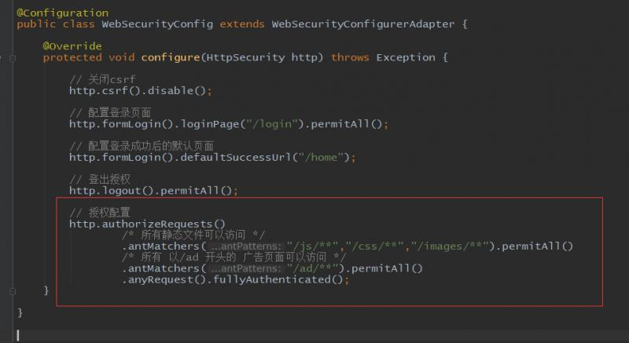
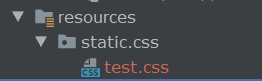
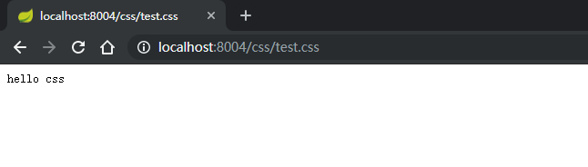
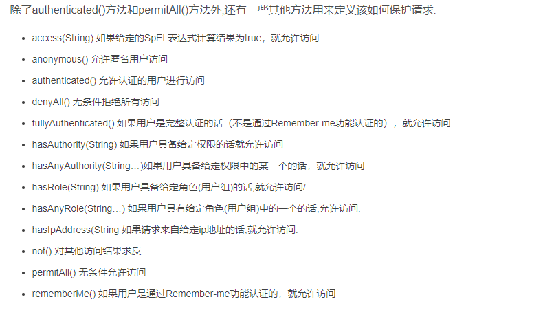
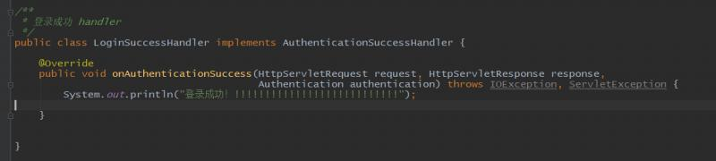
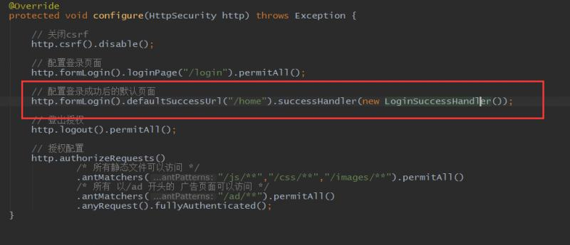
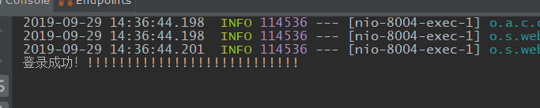
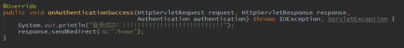

security的配置类中，对所有路径进行了统一授权配置。但是有的内容我们也需要让未登录游客有权限访问，比如js，css等静态文件，还有一些宣传页面等等。这些路径可以单独配置：

我们来试验一些，springboot项目的试图页面一般放在resource文件夹下面的templates文件夹下。而静态文件一般放在resource文件夹下面的static文件夹下。我们来建立一个test.css文件，

随便写点内容，启动项目看看效果：

可以看到在未登录的情况下是可以访问的。也可以弄一个简单的广告页面查看效果，此处不再演示。关于授权，下面是一些总结：

现在我们登录成功的时候直接跳转到了默认页面。有时候登录操作要求要记录一下日志再跳转，或者登录成功后执行一些其它逻辑再跳转，我们可以增加一个登录成功处理器LoginSuccessHandler，这个类需要实现 AuthenticationSuccessHandler 接口，并实现onAuthenticationSuccess方法：

下一步需要在配置类中，配饰成功处理器：

重启登录可以看到，控制台成功打印了语句：

但是此时没有跳转到默认页面，这时候默认页面的配置以及没有用了，我们需要在成功处理器中手动跳转：

这时候再登录就可以了。defaultSuccessUrl的配置也可以删掉了。security不仅可以配置登录成功处理器，还可以配置登录失败的，可以在http.formLogin()下调用failureHandler()配置。登陆失败处理器需要实现 AuthenticationFailureHandler 接扣，并实现 onAuthenticationFailure方法。不过实际中登录失败的原因很多，比如乱输入账号等等，所以除了特殊情况，一般情况不进行失败处理。
除了登录的处理还有一些其它的处理，比如权限不足的处理，手动退出的处理等等，后面会重点讨论权限不足处理器。